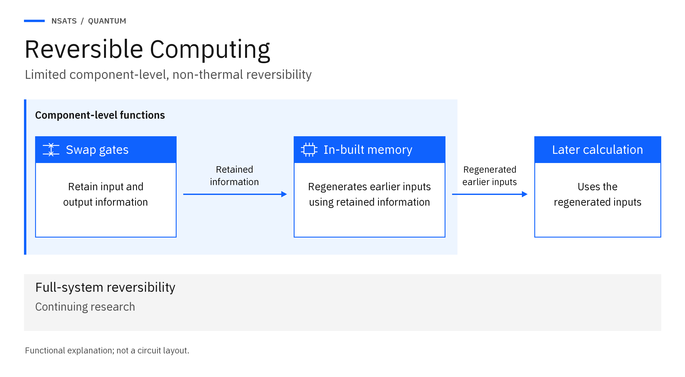

Diagram library
The NSATS Quantum diagrams show how computing functions connect to the applications, memory, storage and networks around them. They help executives and technical teams identify what information enters a function, what it returns and which components support the work. For example, a storage design must account for the controller that processes information as well as the drive that retains it.
These are explanatory diagrams, not circuit layouts or evidence of measured performance. Each record describes the relationship shown and provides a text alternative, version information and reuse permission. A particular implementation may use a different arrangement; its design and assessment must establish the components, interfaces and operating conditions required for the intended task.
Diagram records
Where a licence sits

Purpose: Distinguish the added Quantum component, retained storage and working memory.
What the diagram shows: In this Quantum hardware example, licensed NSATS IP is incorporated into an added chipset or controller. Existing drives retain information for later use, while existing RAM supplies working data to running programs. Both remain classical hardware and connect through the added component.
Version: 1.2, 7 November 2026
Text alternative: Quantum hardware example. Licensed NSATS Quantum IP is incorporated into an added chipset or controller within the licensee’s system. Separate two-way connections link that component to existing drives and existing RAM. Drives provide retained storage for information kept for later use. RAM provides working memory for data used by running programs. The drives and RAM remain classical hardware. This example shows a hardware implementation, not every licensing or implementation route.
Reuse permission: May be reproduced unaltered, with the title and ‘Source: NSATS Ltd’ shown, for non-commercial explanation; no other use without written permission; NSATS marks may not be reused.
A computing operation at the application boundary
Enlarge to inspect labels.Purpose: Identify the inputs, results and information resources involved in a computing operation.
What the diagram shows: An application supplies inputs to a licensed function and receives its results. Within the illustrated system boundary, the diagram identifies retained storage, working RAM, retained gate information and the processor’s working memory. These labels help the reader ask where information is held and how it supports the operation.
The drawing does not establish that the four roles require four separate physical resources. An assessment must identify the memory and storage used by the particular implementation and avoid counting a shared resource more than once.
Version: 1.0, October 2026
Text alternative: An “Application” box sends an arrow labelled “Inputs” across a system boundary to one “Licensed function” box. An arrow labelled “Results” returns to the application. Inside the boundary, separate resource boxes read “Retained storage”, “Working RAM”, “Retained gate information” and “Processor’s working memory”, in that order. The resource boxes sit beside the function box, separately labelled within the same boundary.
Reuse permission: May be reproduced unaltered, with the title and ‘Source: NSATS Ltd’ shown, for non-commercial explanation; no other use without written permission; NSATS marks may not be reused.
Component-level reversible computing

Limited component-level reversibility using retained information and in-built memory. Source: NSATS Ltd. Purpose: Explain limited component-level reversibility using retained information and in-built memory.
What the diagram shows: Swap gates retain input and output information. In-built memory uses it to regenerate earlier inputs for a later calculation. Full-system reversibility is shown separately as continuing research. This is a functional explanation, not a circuit layout.
Version: 4, 8 November 2026
Text alternative: Swap gates retain input and output information. In-built memory uses it to regenerate earlier inputs for a later calculation. Full-system reversibility is shown separately as continuing research. This is a functional explanation, not a circuit layout.
Reuse permission: May be reproduced unaltered, with the title and ‘Source: NSATS Ltd’ shown, for non-commercial explanation; no other use without written permission; NSATS marks may not be reused.
The quantum-classical bus
Enlarge to inspect labels.Purpose: Show how a processor and memory exchange information inside a device.
What the diagram shows: The processor and memory communicate through the quantum-classical bus. In this illustration, requests travel towards memory and data returns to the processor. The bus carries electrical signals with more than two states, beyond binary 0 and 1.
The drawing identifies an internal connection and the information exchanged across it. It does not specify a signalling protocol or establish a processing or transfer speed; those depend on the connected components and their implementation.
Version: 1.0, October 2026
Text alternative: A box labelled “Device” encloses boxes labelled “Processor” and “Memory”. Between them, a line labelled “Quantum-classical bus” carries arrows in both directions. The processor-to-memory arrow reads “Requests”; the return arrow reads “Data”. The line’s label reads “Carries electrical signals with more than two states”. Both component boxes and their connecting arrows sit inside the device boundary.
Reuse permission: May be reproduced unaltered, with the title and ‘Source: NSATS Ltd’ shown, for non-commercial explanation; no other use without written permission; NSATS marks may not be reused.
Temporal Compression stages
Enlarge to inspect labels.Purpose: Distinguish receiving data, completing storage, retrieving it and checking restoration.
What the diagram shows: The illustrated sequence follows data from an application through acceptance and storage to retrieval. A final check compares the retrieved data with the original to establish whether it has been returned intact. The Received and Stored labels identify stages in this example; they do not define the status messages or acceptance criteria of a particular product.
The drive has two separate capacity labels. Physical capacity identifies the storage resource itself, while effective capacity describes how much original data can be retained and returned intact. The assessment must count all information needed for restoration. Compression is operator-defined, and the practical capacity and retrieval requirements depend on the implementation.
Version: 1.0, October 2026
Text alternative: An “Application” box leads through “Received — illustrated acceptance” and “Stored — illustrated storage complete” to “Retrieval”. An arrow continues to “Check intact retrieval against original”. A “Drive” box carries separate labels: “Physical capacity — storage resource” and “Effective capacity — original data retained and returned intact”. The stage boxes follow the illustrated sequence; the capacity labels describe distinct quantities on the drive.
Reuse permission: May be reproduced unaltered, with the title and ‘Source: NSATS Ltd’ shown, for non-commercial explanation; no other use without written permission; NSATS marks may not be reused.
The end-to-end network path
Enlarge to inspect labels.Purpose: Follow a transfer from the sending application to usable information at the receiving end.
What the diagram shows: The sending host passes information through a quantum-classical network card, across ordinary routers and through a corresponding card at the receiving host. Both cards contain quantum-classical chips; the intervening routers do not require an NSATS chip. The illustrated task is complete when the receiving application can use the information.
The four measures describe different aspects of that transfer. Channel capacity concerns the limit on reliable information transmission under a defined channel model. Transmitted-bit rate counts the representation sent over a link, while original-data throughput counts usable original data delivered per unit time. Elapsed time to usable data covers the complete task, including preparation and reconstruction at the endpoints.
Version: 1.0, October 2026
Text alternative: Arrows connect “Sending host”, “Sending quantum-classical card”, “Ordinary routers — no NSATS chip”, “Receiving quantum-classical card” and “Receiving host”. Each card box is labelled “Contains quantum-classical chip”. At the receiving host, a completion label reads “The receiving application can use the information”. Along the complete path, labels name “Channel capacity”, “Transmitted-bit rate”, “Original-data throughput” and “Elapsed time to usable data”.
Reuse permission: May be reproduced unaltered, with the title and ‘Source: NSATS Ltd’ shown, for non-commercial explanation; no other use without written permission; NSATS marks may not be reused.
A reference configuration
Enlarge to inspect labels.![A Task card points to a Licensed function card inside a pale-blue Implementation boundary. A Surrounding components card is also inside the boundary. Requests point from the licensed function to the surrounding components, and Results return in the opposite direction. A separate strip outside the boundary shows Existing components — continuing roles. Five illustrated reference configurations appear below: Storage (temporal drive), Working memory (RAM), One component for storage and working memory, Networking (paired network cards), and Security. The five configurations are separate examples, not sequential steps.](../../../../assets/images/r33/reference-configuration-r2/reference-configuration-carbon-r2.png)
View full-size diagram Purpose: Connect an application task to the function, components and interfaces needed to perform it.
What the diagram shows: A reference configuration starts with a task and identifies the licensed function used to perform it. Requests and results connect that function to the surrounding components, while the implementation boundary distinguishes the added components from existing equipment that continues to perform its original role.
The five examples cover retained storage, working memory, a combined storage and working-memory component, paired networking cards and security. They are alternative application contexts, not a list of components that every solution must include. The diagram supports design discussions; it does not provide a complete circuit or establish that an implementation has been tested.
Version: 1.1, October 2026. Editorial revision: 9 November 2026.
Text alternative: A Task card points to a Licensed function card inside a pale-blue Implementation boundary. A Surrounding components card is also inside the boundary. Requests point from the licensed function to the surrounding components, and Results return in the opposite direction. A separate strip outside the boundary shows Existing components — continuing roles. Five illustrated reference configurations appear below: Storage (temporal drive), Working memory (RAM), One component for storage and working memory, Networking (paired network cards), and Security. The five configurations are separate examples, not sequential steps.
Reuse permission: May be reproduced unaltered, with the title and ‘Source: NSATS Ltd’ shown, for non-commercial explanation; no other use without written permission; NSATS marks may not be reused.